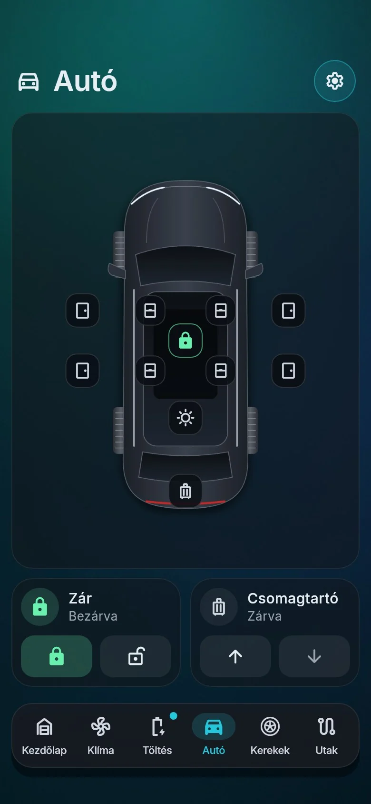
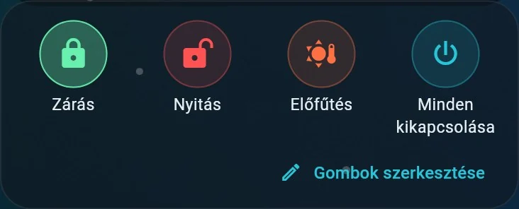
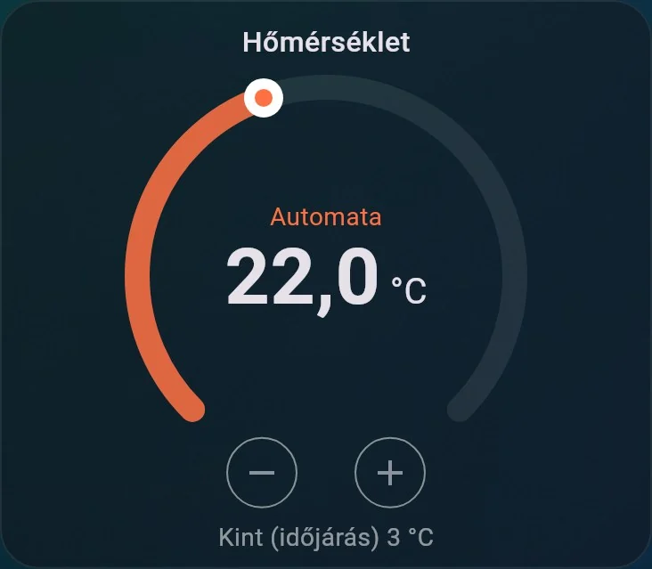

Minden funkció
Távvezérlés
Zárás, előfűtés, hűtés – bárhonnan.
Küldj parancsot az autónak a kanapéról vagy az irodából, és lásd, hogy tényleg végrehajtotta-e.



A kedvenc parancsaid egy koppintásra.
Tedd a kezdőlapra a leggyakrabban használt gombokat – zárás, nyitás, előfűtés, minden kikapcsolása és továbbiak –, abban a sorrendben, ahogy szereted.
- Csak amit az autód tud – a Carmeo azokat a parancsokat kínálja, amelyeket az autód elfogad.
- Widgetekből is – gombok a Vezérlőközpontban iPhone-on, gyorsbeállítás-csempék Androidon.


Klíma, ülésenként.
Állítsd be az utastér hőmérsékletét, kapcsold az ülésfűtést és -szellőztetést ülésenként, a kormányfűtést, a páramentesítést és a szélvédőfűtést – az utastér felülnézeti képén.

Sikerült? A Carmeo ellenőrzi.
Parancs után a Carmeo újra megnézi az autót. Ha az autó nem hajtotta végre – mert alszik, vagy nincs térereje –, szól, és nem hagy bizonytalanságban.
- Előbb megerősítés – ha kéred, minden távoli parancs előtt rákérdez.
- Face ID vagy ujjlenyomat – ha kéred, a nyitás, a csomagtartó, az ablakok és a napfénytető előtt.
Próbáld ki a saját autódon.
A Carmeo ingyenes. Csatlakozz a nyílt tesztcsoporthoz iPhone-on vagy Androidon.